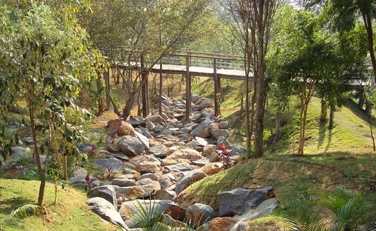

1. Parque da Cidade

O Parque da Cidade foi desenvolvido e construído pelo DAE Jundiaí e foi inaugurado em 2004. O parque se tornou cartão Postal da cidade é uma das atrações preferidas da população de Jundiaí e região para aproveitar e curtir o final de semana com a família e amigos.
O parque recebe em média 500 pessoas durante a semana e no final de semana o número de visitas aumenta para aproximadamente 5 mil. Com espaço de 500 mil metros, conta com atrações para a família e surpreende quem o visita por suas belezas naturais. Todos que visitam a cidade precisam conhecer esse parque e se divertir.

Rodovia João Cereser, km 66, Pinheirinho, Jundiaí
2. Jardim Botânico

O Jardim Botânico de Jundiaí (JBJ) foi inaugurado em 2004 e conta com uma área de 150.000 m². A ideia para a construção do Jardim Botânico aconteceu por uma proposta de recuperar a área com long histórico de degradação. Por conta disso a área sofreu historicamente processos antrópicos que aceleram essa degradação ao longo dos anos, como deposição de resíduo, extrativismo mineral e sucessivos incêndios, que modificaram a vegetação natural e causaram danos à vegetação que resistiu.
Jardim Botânico é considerado uma referência de paisagismo, foram criados estruturas para atendimento ao público, para exposição e reprodução de plantas, trilhas para caminhadas, cascatas, lagos artificiais, jardins temáticos e foi iniciado a implantação de coleções botânicas. Os jardins temáticos foram criados para homenagear as diferentes etnias. Atualmente o Jardim Botânico conta com o Jardim Japonês, Jardim Italiano e o Espaço África.
Outra atração que merece destaque é a ciclovia com 8 km de extensão, que corta o Jardim Botânico e o interliga ao famoso Parque da Cidade.
Av. Navarro de Andrade, 120 ou Av. Antonio Frederico Ozanan, 6400
3. Parque Botânico Eloy Chaves
O Parque Botânico Eloy Chaves tem 41 mil m² de área verde preservada e abriga a primeira academia ao ar livre da cidade. O local possui 21 equipamentos de ginástica, sendo dois destinados aos portadores de mobilidade reduzida, com mais de 40 possibilidades de exercícios.
Os visitantes têm à disposição dois mil m² de pista de caminhada, quadra de vôlei, playground e pontes de madeira, na qual facilita a circulação dos usuários.
Avenida Benedito Castilho de Andrade, 1000, Eloy Chaves